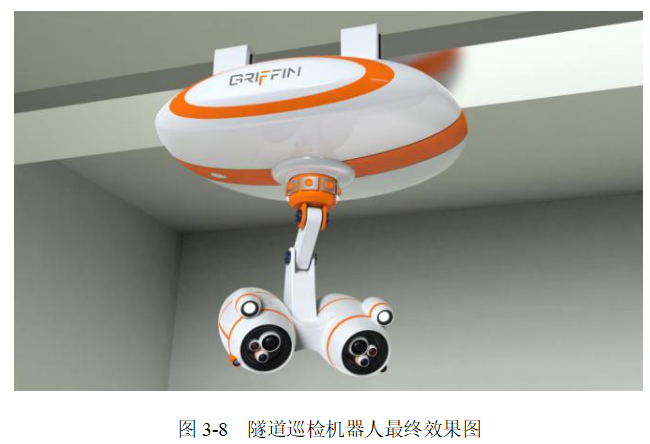
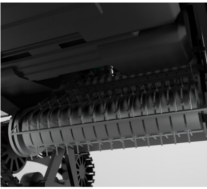
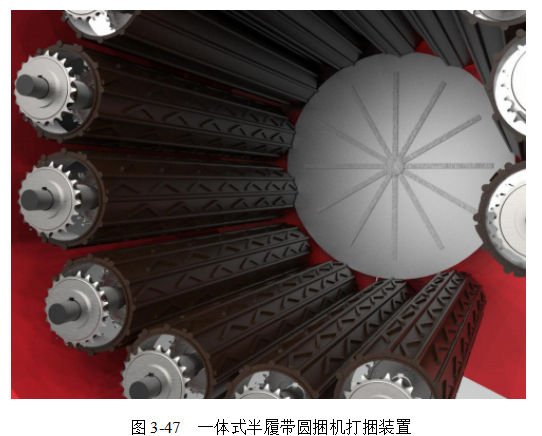

案例如下
为解决上述问题，设计出自动清洁拖把桶。产品采用“瘦长型”的创新结构，方便将拖布竖直放入拖把桶，以节省空间（图1）。
图1 封闭式拖把桶
由于免手洗是必需的功能，因此在拖把桶上设计了刮板。下部设有拖把杆顶部托承，一方面有助于拖把的稳定；另一方面也是产品的电磁开关放置处。另外，拖把桶装有触碰按压式开关，可以在拖把滑动导入时触碰开启，开启后齿轮与拖把上的齿互相咬合可将拖把带入桶内。
产品以简约的白色为主色调，能更好地与室内环境相融合，底部设计成浅灰色，给产品增加品质感的同时也对产品的功能区域进行了划分（图2、图3）
图2 免手洗拖把使用流程
A.拖把经过导入斜坡滑入，并触发开关
B.开启后齿轮与拖把上的齿轮相互咬合将拖把带入桶内
C.依靠齿轮与桶的外壁将拖把固定
D.拖把上下移动并刮干拖把
E.洗、干过程结束后，齿轮再将拖把移出桶，等待取用
图3 免手洗拖把整体效果图
在数字化时代，未来挖掘机不再是简单的工程机械，更是科技和智慧的结晶。本项目旨在将未来挖掘机的概念设计与智能化产品设计开发与创新制造虚拟仿真实践教学实验室相结合，为学生提供一次前沿科技与实际操作的深度学习之旅。
通过深入的概念设计，我们将引领学生走进未来挖掘机的设计思想。从机械结构到智能控制系统，学生将深刻理解未来挖掘机的多元化功能和应用场景。实验室为学生提供虚拟仿真环境，让他们能够在数字化平台上模拟挖掘机的设计与运行。通过实际操作，学生将深入了解不同设计方案的影响，从而优化产品性能。
这个项目将为学生提供一次前瞻性、创新性的实践机会，让他们深入了解未来挖掘机的设计理念，同时在实验室中运用数字化平台，创造未来智慧工程机械的可能性。随着国民经济的不断发展，我国工程建设的规模不断扩大，挖掘机的市场需求也不断增长。但是由于挖掘机面对的施工环境各有不同，当前在人机工程、智能控制、使用安全性、造型美观程度上都有很多欠缺。例如现有挖掘机形态单一、作业时存在盲区。本设计针对上述问题，运用履带轮、微型摄像头以及无线充电技术解决了挖掘机目前存在的问题，并且提出可分离式驾驶舱挖掘机的概念设计，为未来挖掘机的设计提供了一种新的思路（图4）。
图4 未来挖掘机设计效果图
在工作结束或者需要单独使用时，驾驶室可以作为代步工具，单独行驶。在驾驶舱和挖掘机主体可分离这一方面，主要依靠了电磁力吸附技术以及无线充电技术，使整个挖掘机的使用流程更加便捷和轻松。同时把轮子和驾驶室相结合的造型打破了原有驾驶室的模式（图5）。
图5 未来挖掘机脱机身驾驶
挖掘机的驾驶室还具有遥控操作功能，在一些危险地区施工时，可以让驾驶室与机身分离，驾驶员远程遥控施工，从而消除驾驶员的人身安全隐患（图6）。
图6 远程遥控挖掘机场景
通过深入研究滤水壶的概念设计，项目将引领学生走进滤水科技的前沿。学生将学习如何通过创新设计，提高滤水壶的过滤效率、便携性。实验室提供了先进的虚拟仿真环境，使学生能够在数字化平台上模拟不同滤水壶设计的效果。通过虚拟实践，学生将更好地理解各种设计方案对产品性能的影响，从而优化设计。本项目特别强调智能化产品设计，包括智能感应、数据监测等方面。学生将学会如何将最新的智能技术融入到滤水壶的设计中，提升其智能化水平和用户便利性。
该滤水壶采用意象仿生设计法，取自然界水循环（如图7）、自然滤水的概念与家用电器——滤水壶相结合，如图8所示，产品整体造型优雅、简洁且独具匠心，能给用户带来富有情趣的审美体验。
图7 自然界水循环
图8 滤水壶效果图
为解决传统滤水壶水资源浪费的问题，该产品除了保留市面现有滤水壶的滤水加热功能外，在滤水盘上进行了创新，使其与水箱上盖融为一体，可以使每次使用后的滴水直接流入水箱之中，从而实现水循环，将绿色设计的观念贯彻其中（图9）。
图9 滤水壶效果图
该滤水壶的工作原理如图10和图11所示，水经过电池加热成热水，液晶触控操作屏，可以控制接水的温度和量，同时对水质进行实时掌握，需要喝水时，把杯子放在滤水盘上，水通过送水臂从出水口流出，当杯子被拿走时，多余的水滴在滤水盘上的收集槽中，经过滤芯重复利用，减少了水资源的浪费，实现了水循环。
图10 工作原理图
图11 操作屏
加热和送水装置，能够将过滤后的水送入出水口，在有需要时可以将水进行加热（图12）。
图12 加热&送水装置
充电口为磁吸式，设置在滤水器后方（图13）。
图13 加热&送水装置
整体效果如图14所示。
图14 滤水壶效果图